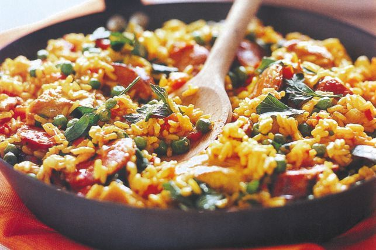

Paella

A hearty meal with chicken breast, veggies and spicy chorizo.
Paella is a great meal for packing lunches for the work week. It requires very little preparation and is fairly simple to cook. One of the shittiest things
for me personally is cooking rice for a dish. Luckily, with this one pot recipe you just chuck the rice in with the chicken broth and Bob's your uncle.
Ingredients
- 500g chicken breast
- 2 cups of rice
- 250g of chorizo
- 1 cup of frozen peas
- 1 medium sized onion
- 4 crushed garlic cloves
- 2 cups of chicken stock
- tumeric, cumin, seasoning
- 400g can of diced tomatoes
- 1 capsicum
Steps
- Cook the chorizo in a big pan over medium heat until it's crisping up, then place on a separate plate
- Using chorizo oil, cook the diced chicken breast
- Cut up your capsicum and onion and crush the garlic cloves. Once the chicken is cooked, throw it all together
- Next, add your seasonings along with the chicken stock, tomatoes, and rice
- Let it all simmer for 15 minutes, and then add your chorizo and frozen peas and let it sit for a couple more minutes